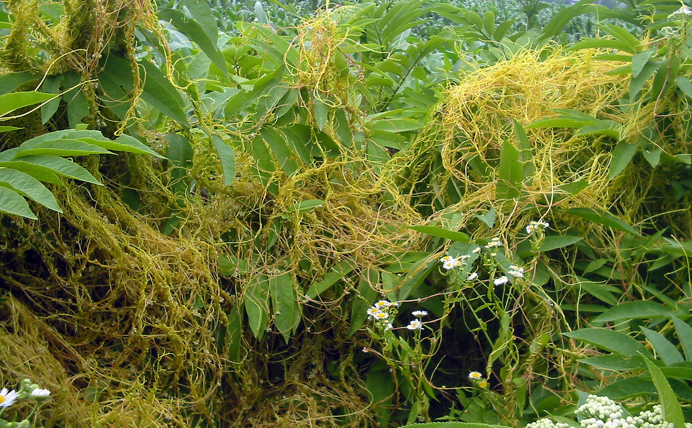

Mimicry
Native to the temperate rainforests of southern Chile, this mysterious vine is able to mimic the leaves of almost any plant it climbs on. The shape, size, and even color of its leaves transform to match those of plants in its proximity without even needing to physically contact them—a behavior not known in any other plant! It graciously offers its edible berries to humans and other animals.
Dodder
Boquila trifoliolata

Master of LinkedIn
NAs with most 'parasitic' plants, there's much more to the dodder's relationships with its host plants than revealed by its much stigmatized label. This vine has created an alternative to the Wood Wide Web allowing plants to communicate with each other through the connections this plant makes—even between species! Plants are able to send warning signals to others in case of pests or other dangers. In addition, genetic analysis has also found it borrows a lot of its DNA from plants it parasitizes.